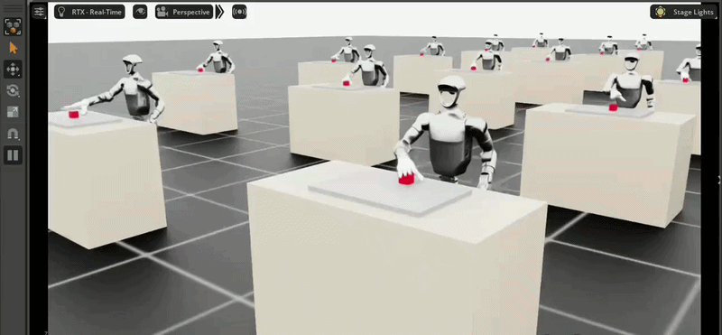
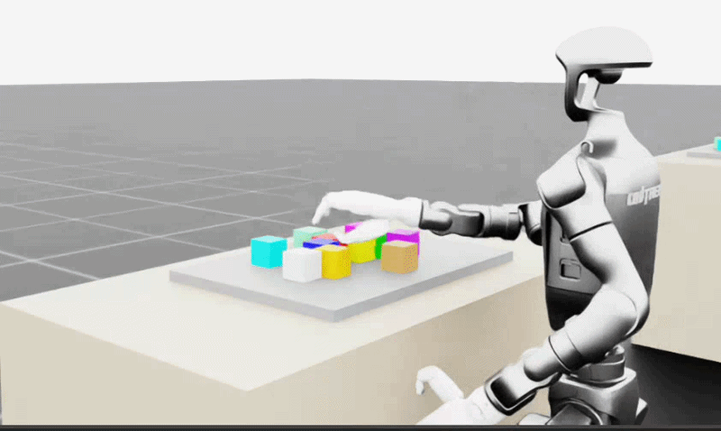

Research
Sim to Real Transfer for Dexterous Bimanipulation of Articulated Tools
- Implementing a teacher student framework for zero shot sim to real transfer for dexterous manipulation.
- Architected the full NVIDIA Isaac Sim environment: MDP, action/observation spaces, and reward shaping.
- Developed a clutter based curriculum learning policy with safety curriculum for collision aware grasping.
- Designed structured reward function to train stable RL policy for multi fingered dexterous manipulation.
- Integrating UltraDex grasp sampler in current policy to generate more efficient hand poses for grasping.


Teacher and student · sim to real transfer